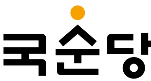

> 인재채용 > 인사제도
인사제도
국순당은 술을 빚기 전에, 늘 사람을 먼저 생각합니다.
인재상
국순당 MISSION 헌장을 실천하는 자
인재상
-
- 상호, 신뢰와 협력
- 우리는 상호 이해와 신뢰를 바탕으로, 서로의 의견이 상하,동료간에 정직하게 전달되고, 상대를 존중하는 커뮤니케이션 문화를 활성화한다.
-
- 육성
- 회사는 사원에게 자기계발과 성장의 기회를 적극 제공함으로써 자율적이고 창의적인 인재로 육성한다.
-

- 자기계발
- 내가 회사 경쟁력의 원천이며 회사를 대표한다는사명감으로 스스로 변화의 주체가 된다.
-
- 1등 정신
- 우리는 목표설정, 프로세스, 결과등 우리가 하는 모든 생각과 행동에서 최고를 지향한다.
-
- 창의
- 우리는 남들과 같은 생각과 행동으로는 1등이 될 수 없다는 것을 인식하고, 차별화된 생각과 행동을 습관화 한다.
-
- 도전
- 우리는 현실에 안주하지 않고 끊임없이 도전하며, 과감한 도전을 격려하고, 성공에 상응하는 보상을 한다.
인재개발
21C 주류문화를 선도하는 도전적이며 창의적 감각을 지닌 인재육성
-
- 01
- 직능교육
- 임직원의 업무와 관련된 다양한 외부 직능교육을 이수할 수 있도록 회사차원의 적극지원이 이루어지며, 이를 통해 업무능력 향상과 자기발전을 이룸
-
- 02
- 계층교육
- 계층별 집합교육을 통해 폭 넓은 지식의 습득과 팀웍 배양
-
- 03
- 입문교육
- 신규입사자들의 오리엔테이션, 조직적응, 회사와의 비전공유, 자기계발 계획수립등에 동기부여
-
- 04
- 테마교육
- 특정 테마를 준비하여 외부강사를 초청한 강좌를 진행하여 임직원에게 다채로운 교육기회를 제공함
복리후생
국순당은 임직원 생활의 질을 향상시키기 위해 다양한 복리후생제도를 기획/운영하고 있습니다.
-
- 법정보험
- 법정 복리후생 4대보험(국민연금, 건강보험, 고용보험, 산재보험).퇴직금
-
- 주택자금융자
- 일정 임직원의 주택임차 및 구입에 필요한 자금을 융자 지원
-
- 자녀학자금
- 일정 국내외에 재학중인 임직원의 자녀에 대해서 학자금을 지원
-
- 종합건강검진
- 일정 임직원 개인의 연령에 따라 주기적인 종합건강검진을 지원
-
- 자사제품 저가구입
- 회사가 생산하는 일정제품을 저가에 구입 및 업소 음용 시 일정금액 지원
-
- 원격지 근무자
주택보조 - 출퇴근 거리 감소, 업무 효율성 증진
- 원격지 근무자
-
- 사내동호회 활동
- 활발한 교류와 관심사를 공유하는 다양한 사내동호회 활동비 지원
-
- 콘도미니엄
- 임직원 할인금액으로 콘도 이용
-
- 경조사
- 집안 내 경조사 발생 시 경조휴가와 경조금 지급 및 상조 물품 지원
-
- 기타 각종 포상제도
- 신제품 개발 등 우수사원 선발 및 포상